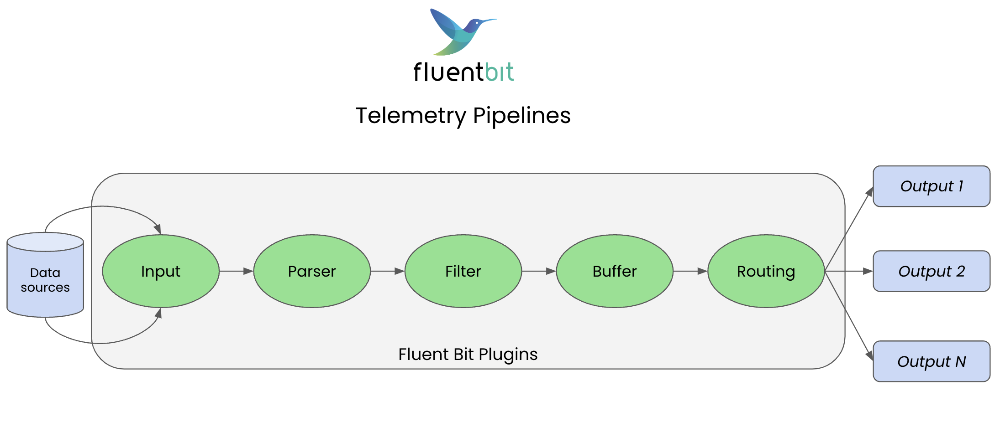
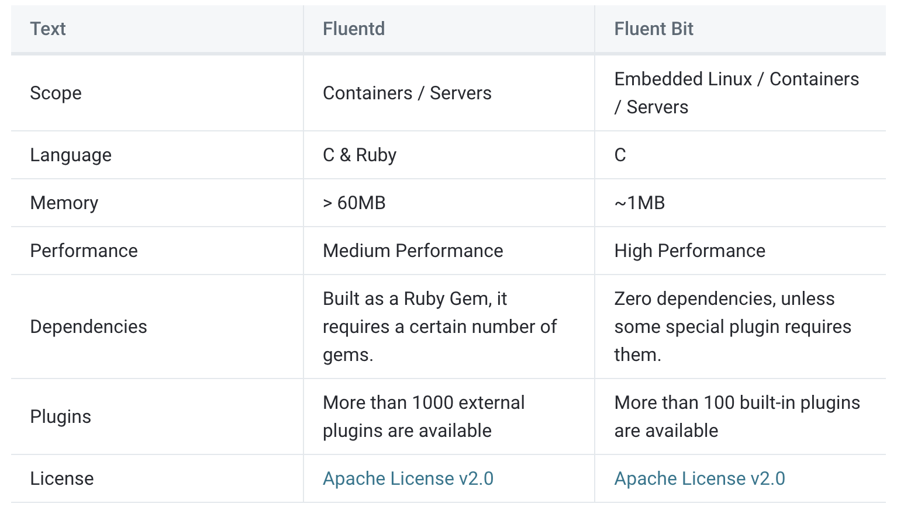
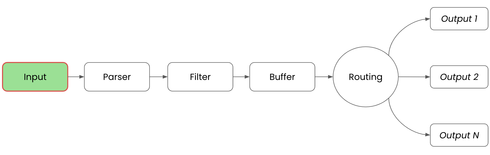
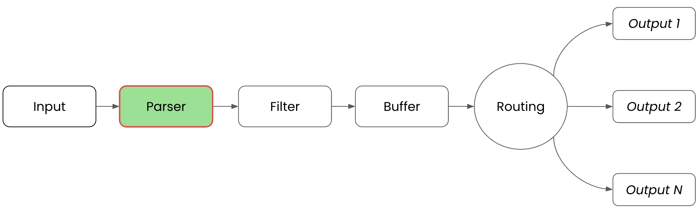
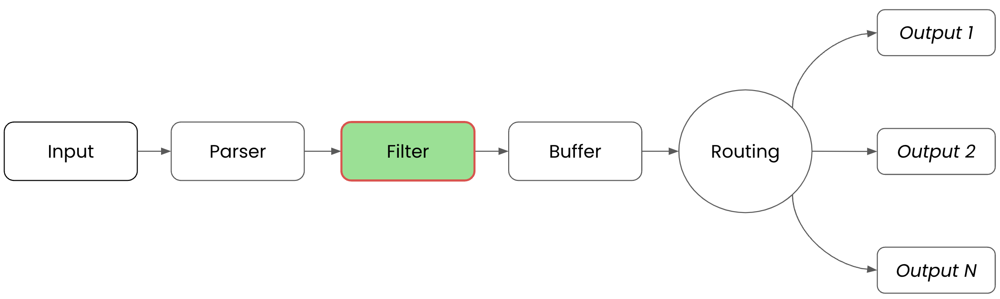
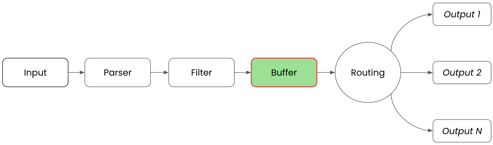
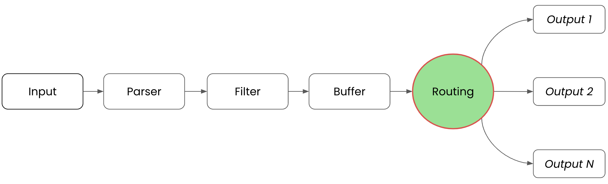
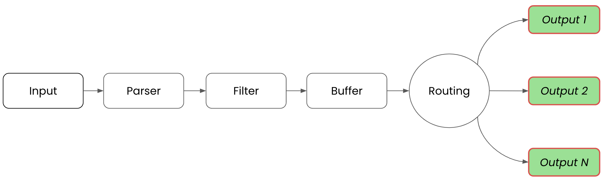

Lab 1 – Introduction to Fluent Bit
Lab Goal
To gain an understanding of Fluent Bit and its role in cloud native observability.
Introduction – Defining pipelines
Before we get started, let's get on the same page with a definition of cloud native
observability pipelines. As noted in
this trend report:
Observability pipelines are providing real-time filtering, enrichment, normalization
and routing of telemetry data
Introduction – Pipeline trends
The rise in the amount of data being generated in cloud native environments has become such a
burden for teams trying to manage it all, as well as a burden to organization's budgets. As they
are searching for more control over all this telemetry data, from collecting, processing, and
routing, to storing and querying.
Data pipelines have gained significant traction in helping organizations deal with the challenges they are facing by providing a powerful way to lower ingestion volumes and help reduce data costs.
Data pipelines have gained significant traction in helping organizations deal with the challenges they are facing by providing a powerful way to lower ingestion volumes and help reduce data costs.
Introduction – Telemetry pipeline benefits
Telemetry pipelines act as a telemetry gateway between cloud native data and organizations.
It's performing real-time filtering, enrichment, normalization, and routing to affordable storage.
This reduces dependencies on expensive and often proprietary storage solutions.
Another plus for organizations is the ability to reformat collected data on the fly, often bridging the gap between legacy or non-standards based data structures to current standards. They can achieve this without having to update code, re-instrument, or redeploy existing applications and services.
Another plus for organizations is the ability to reformat collected data on the fly, often bridging the gap between legacy or non-standards based data structures to current standards. They can achieve this without having to update code, re-instrument, or redeploy existing applications and services.
Introduction – What is Fluent Bit?
From the
project documentation,
Fluent Bit is an
open source
telemetry agent specifically designed to efficiently handle the
challenges of collecting and processing telemetry data across a wide range of environments, from
constrained systems to complex cloud infrastructures. It's effective at managing telemetry data
from various sources and formats can be a constant challenge, particularly when performance is a
critical factor.
Introduction – Telemetry pipeline background
Before we get started, let's get on the same page with what cloud native telemetry pipelines
are. As noted in
this report,
"Telemetry pipelines providing real-time filtering, enrichment, normalization and routing
of telemetry data".
Introduction – What does Fluent Bit do?
Rather than serving as a drop-in replacement, Fluent Bit enhances the observability strategy for
your infrastructure by adapting and optimizing your existing logging layer, as well as metrics
and traces processing. Furthermore, Fluent Bit supports a vendor-neutral approach, seamlessly
integrating with other ecosystems such as Prometheus and OpenTelemetry.
Fluent Bit can be deployed as an edge agent for localized telemetry data handling or used as a central aggregator or collector for managing telemetry data across multiple sources and environments. Fluent Bit has been designed for performance and low resource consumption.
Fluent Bit can be deployed as an edge agent for localized telemetry data handling or used as a central aggregator or collector for managing telemetry data across multiple sources and environments. Fluent Bit has been designed for performance and low resource consumption.
Introduction - Fluent Bit data pipeline
Designed to process logs, metrics, and traces at speed, scale, and with flexibility:

Introduction – What about Fluentd?
First there was Fluentd, a
CNCF Graduated Project. It's
an open source data collector for building the
unified logging layer
. When installed, it runs in the background to collect, parse, transform, analyze and store
various types of data.
The projects have many similarities: Fluent Bit is designed and built on top of the best ideas from Fluentd architecture and general design. Which one you choose depends on your end-users needs.
The projects have many similarities: Fluent Bit is designed and built on top of the best ideas from Fluentd architecture and general design. Which one you choose depends on your end-users needs.
Introduction – Fluentd to Fluent Bit comparison
Both projects share similarities, Fluent Bit is fully designed and built on top of the best
ideas from Fluentd architecture and general design:

Introduction – Understanding Fluent Bit concepts
Before we dive into using Fluent Bit, it's important to have an understanding of the key
concepts, so let's explore the following:
- Event or Record
- Filtering
- Tag
- Timestamp
- Match
- Structured Message
Introduction – What is an Event or Record?
Each incoming piece of data is considered an
Event or a
Record. This lab uses Event as the preferred terminology.
An example of an Event is shown below in a sample log file, with each line
representing one Event:
Feb 26 09:49:58 EricsM2 syslogd[361]: ASL Sender Statistics
Feb 26 09:51:18 EricsM2 AMPDeviceDiscoveryAgent[764]: mux-device:1392
Feb 26 09:53:18 EricsM2 AMPDeviceDiscoveryAgent[764]: Entered:__thr_AMMuxedDeviceDisconnected
Feb 26 00:30:30 EricsM2 syslogd[361]: ASL Module "com.apple.iokit.power"
Events have a strict format of timestamp,
key/value metadata, and payload.
Introduction – Fluent Bit wire protocol and Events
Fluent Bit communicates with its own
wire protocol that represents each
Event as a two element array with a nested first element:
[[TIMESTAMP, METADATA], MESSAGE]
- TIMESTAMP – in seconds as integer or floating point value (!STRING)
- METADATA - is a possibly empty object containing event metadata
- MESSAGE - is an object containing the event body
Intermezzo – Older Fluent Bit wire protocol
Previous versions of Fluent Bit (prior to v2.1.0) represent each
Event in
a different format, without the metadata element:
[TIMESTAMP, MESSAGE]
Note that this older format is supported for reading input event streams.
Introduction – Filtering on our events
The concept of
Filtering is when we need to perform modifications on the
contents of an Event, the process of altering, enriching, or dropping an
Event. A few examples of this are:
- Appending specific information to an Event, such as an IP address
- Select a specific piece of the Event content
- Drop
Eventsthat matches certain criteria
Introduction – Everything gets a Tag
Every singe
A tagged
Event, every one, is given a Tag as it
enters our Fluent Bit pipeline. The Tag is an internal string used by the
Router in later stages of our pipeline to determine which filters or
output phases an Event must pass through.A tagged
Event must always have a matching rule, see the official
Router
documentation for details.
Note: One input plugin does NOT assign tags, the
Forward input. It uses the
Fluentd wire protocol called Forward where every Event
comes with a Tag. Fluent Bit always uses the incoming
Tag set by a client.
Introduction – What is a Timestamp?
A
Timestamp is assigned to each Event as it enters a
pipeline, is always present, and is a numerical fraction in the form of:
SECONDS.NANOSECONDS
- SECONDS – number of seconds that have elapsed since the Unix epoch.
- NANOSECONDS – fractional second or one thousand-millionth of a second.
Introduction – Matching our Events
Fluent Bit delivers collected and processed
For more details around
Events to possible destinations
by using a routing phase. A Match represent a rule applied to
Events where it examines its Tags for matches.For more details around
Matches and Tags, see the
Router
documentation.
Introduction – Unstructured or Structured Messages
When
Unstructured message:
Events enter the system they can be viewed as either unstructured or
structured Event Messages. The goal of Fluent Bit is to ensure that all
messages have a structured format, defined as having keys and values, which
ensures faster operations on data modifications.Unstructured message:
"This workshop was created on 1456289299"
Structured message:
{"project": "workshop", "created": 1456289299}
Intermezzo – It's always a structured message
Fluent Bit treats every single
Event message as a structured message. It
uses internally a binary serialization data format called
MessagePack, which is like a version of
JSON on steroids.
Introduction - Buffering basics for pipelines
A major issue with data pipelines is finding a way to store data that is ingested. We need
in-memory storage to hold the data you are processing (fast), but we also don't want to lose data
when this first storage is full. To achieve that, we need a secondary storage to hold all data
that does not fit into memory.
All of this is known as data buffering, having the ability to store
All of this is known as data buffering, having the ability to store
Events
somewhere, while processing and delivering them, to still be able to store more.
Introduction – Fluent Bit's buffering strategy
Networks fail all the time, or have latency issues causing delays in data delivery. There are
many scenarios where we cannot deliver data fast enough as we are receiving it in our pipeline.
When this happens it's a phenomenon known as
Fluent Bit offers a primary buffering mechanism in memory and an optional secondary buffering mechanism using the file system. This hybrid solution provides for high performance while processing incoming data and ensures no data loss due to the issues described above. Data ready for processing will always be in-memory, while other data might be in the filesystem until ready to be processes.
backpressure, and Fluent Bit
is designed with buffering strategies to solve these issues.Fluent Bit offers a primary buffering mechanism in memory and an optional secondary buffering mechanism using the file system. This hybrid solution provides for high performance while processing incoming data and ensures no data loss due to the issues described above. Data ready for processing will always be in-memory, while other data might be in the filesystem until ready to be processes.
Introduction – Telemetry pipeline input phase
A telemetry pipeline is where data goes through various phases from collection to final
destination. We can define or configure each phase to manipulate the data or the path it's taking
through our telemetry pipeline. The first phase is
INPUT, which is where
Fluent Bit uses
Input Plugins to
gather information from specific sources. When an input plugin is loaded it creates an instance
which we can configure using the plugins properties.

Introduction – Data pipeline parser phase
The second phase is
PARSER, which is where unstructured input data is turned
into structured data. Fluent Bit does this using
Parsers that we
can configure to manipulate the unstructured data producing structured data for the next phases
of our pipeline.

Introduction – Example data pipeline parsing
Here's an example of unstructured log data entering the
Parser phase:
192.168.2.20 - - [28/Jul/2006:10:27:10 -0300] "GET /cgi-bin/try/ HTTP/1.0" 200 3395
And the parsing results with structured data as the output:
{
"host": "192.168.2.20",
"user": "-",
"method": "GET",
"path": "/cgi-bin/try/",
"code": "200",
"size": "3395"
}
Introduction – Data pipeline filter phase
Filtering phase is when we modify, enrich, or delete any of the collected
Events. Fluent Bit provides many out-of-the-box plugins as
Filters that
can match, exclude, or enrich your structured data before it moves onwards in the pipeline.
Filters can be configured using the provided properties.

Introduction – Data pipeline buffer phase
Buffering was discussed previously, but here in the pipeline is where the data is stored, using
in-memory or the file-system-based options. Note that when data reaches the buffer phase it's in
an immutable state (no more filtering) and that buffered data is not raw text, but in an
internal binary representation for storage.

Introduction – Data pipeline routing phase
The next phase is
ROUTING, which is where Fluent Bit uses the previously
discussed Tag and Match concepts to determine which
output destinations to send data. During the INPUT phase data is assigned
a Tag, during the ROUTING phase data is compared to
Match rules from output configurations, if it matches then the
data is sent to that output destination.

Introduction – Example routing to database and memory
In this example we'll collect and
Tag two metrics, cpu and memory, which we
then want to go to separate output destinations. This is configured as follows, noting all
matching happens on Tag values:
...
pipeline:
inputs:
- name: cpu
tag: my_cpu
- name: mem
tag: my_mem
outputs:
- name: database
match: 'my*cpu'
- name: stdout
match: 'my*mem'
...
Introduction – Example routing using wildcards
In this example we'll collect and
Tag the same two metrics, cpu and memory,
which we then send to the console output using a catch-all wildcard:
...
pipeline:
inputs:
- name: cpu
tag: my_cpu
- name: mem
tag: my_mem
outputs:
- name: stdout
match: 'my*'
...
Introduction – Example routing with regular expressions
In this example we'll collect and
Tag two sensor metrics which we then send
to the console output using a the Match_regex pattern that matches all
tags ending with "_sensor_A" or "_sensor_B":
...
pipeline:
inputs:
- name: temperature_sensor
tag: temp_sensor_A
- name: humidity_sensor
tag: humid_sensor_B
outputs:
- name: stdout
match_regex: '.*sensor_[AB]'
...
Introduction – Data pipeline output phase
The final phase is
OUTPUT, which is where Fluent Bit uses
Output Plugins to
connect with specific destinations. These destinations can be databases, remote services, cloud
services, and more.

Lab completed – Results
We gained a basic understanding of Fluent Bit.

Next up, installing Fluent Bit on your machine.

Contact – are there any questions?
Eric D. Schabell
Technology Advocate Lead
Contact: @ericschabell {@fosstodon.org) or https://www.schabell.org
Technology Advocate Lead
Contact: @ericschabell {@fosstodon.org) or https://www.schabell.org